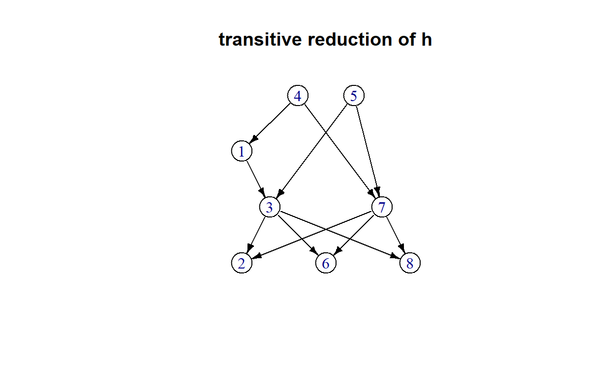

Setup
#save default plot params so we can reset the plot window
gpars<-par()
i=match(c("cin","cra","csi","cxy","din","page"),names(gpars))
gpars<-gpars[-i]
#load libraries
library(MASS)
library(mnem) #needed for transitive.reduction/closure
library(igraph)
library(Rgraphviz)
library(graph)
library(coda) #for MCMC output analysis
library(lecount) #count linear extensions of a PO
library(partitions) #used by dimension functionswd<-"C:/Users/nicholls.NICHOLLS2389/Documents/collab - Kate/Oslo"setwd(wd)
source(file="pofun.R")
source(file="pofun_aux.R")
source(file="modelfun.R")
source(file="outputfun.R")
source(file="dimfun.R")Partial Order basics
Start by generating a random PO with n items - we just need an example to look at and discuss
Partial orders are one to one with transitively closed directed acyclic graphs. As a PO is a kind of DAG we represent it on the computer using its incidence matrix.
How many relations/edges in h?
sum(h)## [1] 21How many pairs of items have no relation?
choose(n,2)-sum(h)## [1] 7We can visualise a PO by plotting it as a graph.
#display PO h as a directed graph
showDAG(h,edge.color='black',vertex.color=NA,vertex.size=25,edge.arrow.size=0.5)
title('transitive closure of h')
This is the transitive closure as it includes edges implied by transitivity.
One basic operation is to list the items at the top and bottom of the PO.
#find the list of top nodes - no "in" edges
(top=which(apply(h,2,sum)==0))## 4 5
## 4 5(bot=which(apply(h,1,sum)==0))## 2 6 8
## 2 6 8We also make use of the depth of a partial order. This is the length of the longest chain. What is the depth of h?
dagdepth(h)## [1] 4The empty order has depth one and a complete order on n items has depth n.
h.empty=0*h
h.total=h.empty; h.total[upper.tri(h.total)]<-1
par(mfrow=c(1,2))
showDAG(h.empty,vertex.color=NA,vertex.size=25)
showDAG(h.total,edge.color='black',vertex.color=NA,vertex.size=15,edge.arrow.size=0.5)
par(gpars)
dagdepth(h.empty)## [1] 1dagdepth(h.total); dagdepth(h.total)==n## [1] 8## [1] TRUEFor viewing we drop edges implied by transitivity.
hr<-transitive.reduction(h)
showDAG(hr,edge.color='black',vertex.color=NA,vertex.size=25,edge.arrow.size=0.5)
title('transitive reduction of h')
Here is a plot highlighting the redundant edges and marking top and bottom nodes (the max set and the min set).
vcols=rep(NA,n);
vcols[top]<-'lightgreen'; vcols[bot]<-'pink'
#igraph orders the edges by first vertex
i=which(t(h)==1)
j=which(t(h)!=t(hr))
j.in.i=match(j,i)
ecols=rep('black',length(i))
ecols[j.in.i]<-'lightblue'
showDAG(h,vertex.color=vcols,edge.color=ecols,vertex.size=25,
edge.arrow.size=0.5)
legend('topright',cex=0.9,lty=c(1,1,NA,NA),pch=c(NA,NA,16,16),col=c('black','lightblue','lightgreen','pink'),lwd=c(2,2,NA,NA),
legend=c('reduction','closure','max set','min set'),bty="n")
Intersecting orders
We can intersect partial orders on the same choice set. The intersection has all the relations that shared by the two orders.
For example, if our two partial orders are (1>2>3) and (1>3>2), ie two total orders, then we get a PO with relations 1>2, 1>3 and no other relations.
Since total orders are just ordered lists we have a simpler notation. For example the total order 1>3>2 is the list (1,3,2). Put the two ordered lists together as columns of an nx2 matrix.
v=matrix(c(1,2,3,1,3,2),3,2)
v## [,1] [,2]
## [1,] 1 1
## [2,] 2 3
## [3,] 3 2Now compute the intersection
hi<-intersect.TO(v)
hi## 1 2 3
## 1 0 1 1
## 2 0 0 0
## 3 0 0 0and plot it.
showDAG(hi,edge.color='black',vertex.color=NA,vertex.size=35,edge.arrow.size=0.5)-1.png)
Linear Extensions of a partial order
The partial order will be the thing we dont know and want to estimate. Our data will be linear extensions. These are total orders that respect the partial order. The set of all LEs of a PO h is LE(h) with |LE(h)| elements/LEs in total.
Take a simple PO on 4 items.
par(mfrow=c(1,2))
n=4
b<-matrix(c(0,1,0,0,0,0,0,0,0,1,0,1,0,0,0,0),n,n,byrow=TRUE)
row.names(b)<-colnames(b)<-1:n
showDAG(b,edge.color='black',vertex.color=NA,vertex.size=45,edge.arrow.size=0.5)
title('example partial order')
Can you list the LEs by hand? There are 5. We now enumerate all the LEs of b and check their intersection gives us back the original PO.
(le<-le.expand(b)); ## [,1] [,2] [,3] [,4] [,5]
## [1,] 1 1 3 3 3
## [2,] 3 3 1 1 4
## [3,] 2 4 2 4 1
## [4,] 4 2 4 2 2The number of LEs of b is the number of columns of le. A function nle() directly counts the number of LEs.
#number of linear extensions
dim(le)[2];
#direct count of nle's without (explicit) enumeration
nle(b); Intersect the LEs and check you get back the PO
bc<-intersect.TO(le)
showDAG(bc,edge.color='black',vertex.color=NA,vertex.size=45,edge.arrow.size=0.5)
title('intersection of its LEs')
par(gpars)PO dimension
The dimension of a PO is the smallest number of its LEs that intersect to give the PO.
Calculating dimension is “hard” - our code calculates dim(PO) in reasonable time for any PO up to n=7 then dies - it simply checks every subset of the LEs of size less or equal floor(n/2).
It can only handle POs on n above 7 if they dont have many LEs.
le## [,1] [,2] [,3] [,4] [,5]
## [1,] 1 1 3 3 3
## [2,] 3 3 1 1 4
## [3,] 2 4 2 4 1
## [4,] 4 2 4 2 2(b.realiser<-decompose(b)) #the smallest set of LEs intersecting to give back b## [,1] [,2]
## [1,] 1 3
## [2,] 3 4
## [3,] 2 1
## [4,] 4 2all(intersect.TO(b.realiser)==b) #intersect these orders gives back PO## [1] TRUEdimension(b)## [1] 2The “crown” PO on n items looks like a crown.
cpo=crown.PO(6)
showDAG(cpo,edge.color='black',vertex.color=NA,vertex.size=45,edge.arrow.size=0.5)
It has dimension equal floor(n/2) - the maximum possible. The crown with n=6 has 48 linear extensions but you only need 3 to represent the PO.
le<-le.expand(cpo)
le ## [,1] [,2] [,3] [,4] [,5] [,6] [,7] [,8] [,9] [,10] [,11]
## [1,] 1 1 1 1 1 1 1 1 1 1 1
## [2,] 2 2 2 2 2 2 2 2 3 3 3
## [3,] 3 3 3 3 3 3 4 4 2 2 2
## [4,] 4 4 5 5 6 6 3 3 4 4 5
## [5,] 5 6 4 6 4 5 5 6 5 6 4
## [6,] 6 5 6 4 5 4 6 5 6 5 6
## [,12] [,13] [,14] [,15] [,16] [,17] [,18] [,19] [,20] [,21]
## [1,] 1 1 1 1 1 2 2 2 2 2
## [2,] 3 3 3 3 3 1 1 1 1 1
## [3,] 2 2 2 5 5 3 3 3 3 3
## [4,] 5 6 6 2 2 4 4 5 5 6
## [5,] 6 4 5 4 6 5 6 4 6 4
## [6,] 4 5 4 6 4 6 5 6 4 5
## [,22] [,23] [,24] [,25] [,26] [,27] [,28] [,29] [,30] [,31]
## [1,] 2 2 2 2 2 2 2 2 2 2
## [2,] 1 1 1 3 3 3 3 3 3 3
## [3,] 3 4 4 1 1 1 1 1 1 6
## [4,] 6 3 3 4 4 5 5 6 6 1
## [5,] 5 5 6 5 6 4 6 4 5 4
## [6,] 4 6 5 6 5 6 4 5 4 5
## [,32] [,33] [,34] [,35] [,36] [,37] [,38] [,39] [,40] [,41]
## [1,] 2 3 3 3 3 3 3 3 3 3
## [2,] 3 1 1 1 1 1 1 1 1 2
## [3,] 6 2 2 2 2 2 2 5 5 1
## [4,] 1 4 4 5 5 6 6 2 2 4
## [5,] 5 5 6 4 6 4 5 4 6 5
## [6,] 4 6 5 6 4 5 4 6 4 6
## [,42] [,43] [,44] [,45] [,46] [,47] [,48]
## [1,] 3 3 3 3 3 3 3
## [2,] 2 2 2 2 2 2 2
## [3,] 1 1 1 1 1 6 6
## [4,] 4 5 5 6 6 1 1
## [5,] 6 4 6 4 5 4 5
## [6,] 5 6 4 5 4 5 4(cpo.realiser<-decompose(cpo)) #takes a couple of seconds## [,1] [,2] [,3]
## [1,] 1 1 2
## [2,] 2 3 3
## [3,] 4 5 6
## [4,] 3 2 1
## [5,] 5 4 4
## [6,] 6 6 5all(intersect.TO(b.realiser)==b)## [1] TRUEKnowing the maximum dimension of a PO is floor(n/2) is useful when we make a prior for POs - if it generates POs by taking K random total orders and intesecting them then we can represent any PO on n items using K=floor(n/2) total orders.
Data as a realisation of a queue
Suppose actors 1,2,…,5 are in a queue contrained by a simple PO
n=5
h=matrix(c(0,1,1,1,1,0,0,1,0,1,0,0,0,0,1,0,0,0,0,1,0,0,0,0,0),n,n,byrow=TRUE)
colnames(h)<-rownames(h)<-1:n
showDAG(transitive.reduction(h),edge.color='black',vertex.color=NA,vertex.size=25,edge.arrow.size=0.5)
#set.seed(10); n=8; h<-rZPO(n) #try this - explore random POSimulate the evolving queue - neighbors swap positions if not constrained by PO
(le=le.expand(h))## [,1] [,2] [,3]
## [1,] 1 1 1
## [2,] 2 2 4
## [3,] 3 4 2
## [4,] 4 3 3
## [5,] 5 5 5q=le[,1] #start state must be a LE
#
T=10000 #simulate T steps
X<-matrix(NA,n,T) #store the state of the queue
for (t in 1:T) {
i=sample(1:(n-1),1) #propose to swap q[i] and q[i+1]
if (h[q[i],q[i+1]]!=1) { #if q[i+1] isnt below q[i] in the PO
q[c(i,i+1)]=q[c(i+1,i)] #swap q[i] and q[i+1]
}
X[,t]=q #save the current queue state
}
#now the columns of X are 10000 random ordersThe sampled queue realisations should be uniformly distributed over LEs
#Go through the sampled queue realisations (columns of X) and label them
#by which LE they are
ord=apply(X,2,function(x){
which(apply(le,2,function(y){all(x==y)}))
})
#how frequently did each LE appear
(ft<-table(ord)/T)## ord
## 1 2 3
## 0.3362 0.3298 0.3340Make a histogram. On the x-axis are all the disttinct LEs and the y-axis shows how frequently they appeared.
le.str<-apply(le,2,function(x){paste(x,collapse = ' ')})
barplot(ft~le.str,las=2,cex.names=0.5,
ylab='probability',xlab='',
main='distribution of random orders - noise free case',
cex.main=0.8,cex.axis=0.7);
abline(h=1/nle(h),col=2,lwd=2,lty=2)
Intersection order is MLE (sometimes)
The MLE PO in the noise free case is the intersection order: if we start with an unknown true PO “h.true” and have (noise free) observations y_i~U(LE(h.true)) then the intersection order of y=(y_1,…,y_N) is the PO that maximises the likelihood: h.hat = argmax_h p(y|h)
Take a simple example PO
set.seed(10)
n=8
h.true<-rZPO(n) #make a random PO with n items
showDAG(transitive.reduction(h.true),edge.color='black',vertex.color=NA,vertex.size=35,edge.arrow.size=0.5)
title("true PO")
Simulate synthetic data which is N preference orders.
N=10 #try experimenting with smaller N
Y<-matrix(NA,n,N)
for (i in 1:N) {
Y[,i]<-PunifLE(h.true)
}
Y## [,1] [,2] [,3] [,4] [,5] [,6] [,7] [,8] [,9] [,10]
## [1,] 4 5 4 5 4 5 5 4 5 4
## [2,] 5 4 5 4 1 4 4 5 4 5
## [3,] 1 1 1 7 5 1 7 1 7 1
## [4,] 3 7 3 1 7 7 1 7 1 7
## [5,] 7 3 7 3 3 3 3 3 3 3
## [6,] 8 6 6 6 6 2 8 2 2 8
## [7,] 6 8 8 2 2 8 2 8 6 2
## [8,] 2 2 2 8 8 6 6 6 8 6h.hat<-intersect.TO(Y)par(mfrow=c(1,2))
showDAG(transitive.reduction(h.hat),edge.color='black',vertex.color=NA,vertex.size=35,edge.arrow.size=0.5)
title("MLE PO")
showDAG(transitive.reduction(h.true),edge.color='black',vertex.color=NA,vertex.size=35,edge.arrow.size=0.5)
title("true PO")
In this example the true PO had 48 LEs and dimension 2 and we only observed 10 rank-order lists.
nle(h.true)## [1] 48decompose(h.true) ## [,1] [,2]
## [1,] 4 5
## [2,] 1 4
## [3,] 5 7
## [4,] 3 1
## [5,] 7 3
## [6,] 2 8
## [7,] 6 6
## [8,] 8 2Would N=2 (or in general dim(h.true)) observed lists be enough? Repeat the exercise with less data - say N=2 or N=5 - you should find the MLE is sometimes wrong - not every subset of LEs of size dim(h) or more is a realiser for h
suborders
Suppose our assessor has an unknown true PO h=([n],>) expressing their preferences over n items. We present the assessor with subsets S_i i=1,…,N of the n items (called choice sets) and ask them to order the items in each subset/choice set. They return N lists y_1,…,y_N with y_i a ranking of S_i.
They will use the suborder h_i=(S_i,>) for the items in the choice set to form the order so in the noise free case and y_i~U(LE(h_i)).
set.seed(11)
N=10 #try increasing N - how big does it have to be to ensure we get h.true back?Create N suborders of h.true from the last example. First create N random-sized subsets of [n].
size=sample(2:n,N,replace=TRUE)
S<-lapply(size,function(x){sample(1:n,x,replace=FALSE)})Now pull out the suborders and display them
h.true.sub<-lapply(S,function(x){suborder(h.true,x)})
showDAGs(B=1,T=N,PO=h.true.sub)
par(gpars)
We will now simulate synthetic data - one linear extension for each of the N suborders above.
Y<-vector('list',N)
for (i in 1:N) {
Y[[i]]<-PunifLE(h.true.sub[[i]])
}
Y## [[1]]
## [1] 7 8 6
##
## [[2]]
## [1] 5 3 8
##
## [[3]]
## [1] 3 7
##
## [[4]]
## [1] 5 2
##
## [[5]]
## [1] 4 5 1 7 3 6
##
## [[6]]
## [1] 4 5 3 2 8
##
## [[7]]
## [1] 5 1 7 3 2 6 8
##
## [[8]]
## [1] 4 7 1 8 6
##
## [[9]]
## [1] 5 4 1 7 2 8
##
## [[10]]
## [1] 4 5 7 1 3 2 6Now the observed lists have varying length. It no longer holds that the intersection order is the MLE. we can take all relations displayed and not contradicted by the data - this will give a PO that admits all the lists as LEs. It isnt the MLE as it doesnt include relations not displayed and not contradicted.
This PO estimate will converge to the true PO in the limit that every pair of items appears in an infinite number of choice sets.
h.est<-intersect.SO(Y)
par(mfrow=c(1,2));
showDAG(transitive.reduction(h.true),edge.color='black',
vertex.color=NA,vertex.size=35,edge.arrow.size=0.5)
title("true PO")
showDAG(transitive.reduction(h.est),edge.color='black',vertex.color=NA,vertex.size=35,edge.arrow.size=0.5)
title("estimated PO")
Try increasing N - now that we only have short preference orders in our data it takes a larger N to get a decent estimate of h.true.
Counting linear extensions for a general PO is hard
Bad news for statistical inference: calculating the number of LEs (ie, the likelihood) of a general PO is #P.
For example, let’s calculate the number of LEs nle=|LE(h_n)| of h_n where is the crown PO on n items.
nv<-seq(35,47,2); #unwise to try above 50 (memory)
nvl=length(nv); rt<-numeric(nvl)
pb<-txtProgressBar(min=1, max=nvl, style=3)
for (i in 1:nvl) {
h<-crown.PO(nv[i])
rt[i]<-system.time({nle(h)})[3] #how long to calculate #LEs?
setTxtProgressBar(pb, i)
flush.console()
}##
|
| | 0%
|
|========= | 17%
|
|================== | 33%
|
|============================ | 50%
|
|===================================== | 67%
|
|============================================== | 83%
|
|=======================================================| 100%Time consuming! The run time grows exponentially fast.
{r plot runtime for LE count, include=TRUE} par(gpars) plot(nv,rt,log='y',type='l',ylab='run time',xlab='number of items'); points(nv,rt,pch=4)
With careful coding, exact analysis (ie converging MCMC estimates) is possible for up to around 20-30 items.
Analysis of POs scales linearly with the number of lists but exponentially with the number of items in the longest list.
The uniform prior over partial orders
Sample a PO UAR with n nodes and note informative depth distribution. When n is large the uniform distribution concentrates on POs of depth 3. In this example we only take n=20 (so we dont have to wait too long for the sampler to converge). With n=20 the uniform prior distribution is already quite concentrated on depth 4-6.
The following uses MCMC to sample POs uniformly at random. It initialises the MCMC state with a total order. Once in equilibrium the PO depth stays around 4-6.
set.seed(1)
n<-20
# N=number of samples, S=subsample step, T=number of steps
N=100
S=n^2
T=N*S
#run the MCMC targeting uniform dbn on POs with n nodes
POu<-rupo(n,N,S,T,DRAW=TRUE)##
|
| | 0%
##
|
|= | 1%
##
|
|= | 2%
##
|
|== | 3%
##
|
|== | 4%
##
|
|=== | 5%
##
|
|=== | 6%
##
|
|==== | 7%
##
|
|==== | 8%
##
|
|===== | 9%
##
|
|====== | 10%
##
|
|====== | 11%
##
|
|======= | 12%
##
|
|======= | 13%
##
|
|======== | 14%
##
|
|======== | 15%
##
|
|========= | 16%
##
|
|========= | 17%
##
|
|========== | 18%
##
|
|========== | 19%
##
|
|=========== | 20%
##
|
|============ | 21%
##
|
|============ | 22%
##
|
|============= | 23%
##
|
|============= | 24%
##
|
|============== | 25%
##
|
|============== | 26%
##
|
|=============== | 27%
##
|
|=============== | 28%
##
|
|================ | 29%
##
|
|================ | 30%
##
|
|================= | 31%
##
|
|================== | 32%
##
|
|================== | 33%
##
|
|=================== | 34%
##
|
|=================== | 35%
##
|
|==================== | 36%
##
|
|==================== | 37%
##
|
|===================== | 38%
##
|
|===================== | 39%
##
|
|====================== | 40%
##
|
|======================= | 41%
##
|
|======================= | 42%
##
|
|======================== | 43%
##
|
|======================== | 44%
##
|
|========================= | 45%
##
|
|========================= | 46%
##
|
|========================== | 47%
##
|
|========================== | 48%
##
|
|=========================== | 49%
##
|
|============================ | 50%
##
|
|============================ | 51%
##
|
|============================= | 52%
##
|
|============================= | 53%
##
|
|============================== | 54%
##
|
|============================== | 55%
##
|
|=============================== | 56%
##
|
|=============================== | 57%
##
|
|================================ | 58%
##
|
|================================ | 59%
##
|
|================================= | 60%
##
|
|================================== | 61%
##
|
|================================== | 62%
##
|
|=================================== | 63%
##
|
|=================================== | 64%
##
|
|==================================== | 65%
##
|
|==================================== | 66%
##
|
|===================================== | 67%
##
|
|===================================== | 68%
##
|
|====================================== | 69%
##
|
|====================================== | 70%
##
|
|======================================= | 71%
##
|
|======================================== | 72%
##
|
|======================================== | 73%
##
|
|========================================= | 74%
##
|
|========================================= | 75%
##
|
|========================================== | 76%
##
|
|========================================== | 77%
##
|
|=========================================== | 78%
##
|
|=========================================== | 79%
##
|
|============================================ | 80%
##
|
|============================================= | 81%
##
|
|============================================= | 82%
##
|
|============================================== | 83%
##
|
|============================================== | 84%
##
|
|=============================================== | 85%
##
|
|=============================================== | 86%
##
|
|================================================ | 87%
##
|
|================================================ | 88%
##
|
|================================================= | 89%
##
|
|================================================== | 90%
##
|
|================================================== | 91%
##
|
|=================================================== | 92%
##
|
|=================================================== | 93%
##
|
|==================================================== | 94%
##
|
|==================================================== | 95%
##
|
|===================================================== | 96%
##
|
|===================================================== | 97%
##
|
|====================================================== | 98%
##
|
|====================================================== | 99%
##
|
|=======================================================| 100%If you try this with n=50 it will take about an hour to run but the convergence to depth 3 is more dramatic
Here are 10 sampled states taken at intervals along the MCMC run.
s=10; step=floor(N/s);
showDAGs(B=1,T=N,poi=seq(step,N,step),PO=POu)
Calcuate the depth for each sample from MCMC.
Du=sapply(POu,dagdepth)
effectiveSize(Du) #if interested in MCMC mixing and convergence ## var1
## 59.64012Plot the depth of the evolving PO state. The start state was a total order - you see the depth coming down to small values.
par(gpars); plot(Du,type='l')
hist(Du,breaks=seq(0.5,n+0.5,1),xlab='PO depth',
main='Depth dbn, uniform PO prior',freq=FALSE) 
It concentrates on low depth, asymptotically in n the depth is always 3.
table(Du)/length(Du)## Du
## 4 5 6 8 11
## 0.21 0.51 0.26 0.01 0.01Exploring the latent variable prior
The latent variable prior has three nice properties: it is “marginally consistent” (AKA “projective”); it is easy to incorporate covariates on the ordered items; it has a prior distribution over depths that is less iniformative.
The prior has a parameter, K, the embedding dimension. Each ranked item i=1,…,n is assigned a real vector U_i of dimension K. If i and j are two items then i->j in the PO iff U_{i,k}>U_{j,k} for each k=1,…,K.
set.seed(6)
n=6 #number of items/nodes in PO
K=3 #number of features (columns of U/Z)Here is a PO simulated using latent variables U.
(rho=rRprior()) #the correlation within of rows of U## [1] 0.8832273Sig=matrix(rho,K,K); diag(Sig)=1; #correlation matrix
U=mvrnorm(n,rep(0,K),Sig) #the feature matrix U, one row for each item
vp<-latent2order(U) #convert each column k+1:K to a total order, ranking by U[,k]
mu<-order2partial(vp,n); #intersect the column orders
muc<-my.transitive.closure(mu) #take the transitive closure
mur<-transitive.reduction(mu) #and transitive reductionPlot the rows of U as paths (left) and the resulting PO (right)
par(mfrow=c(2,2),mai=c(0,0,0,0))
plot(0,0,xlim=c(1,K+1),ylim=c(-4,4),type='n',axes=FALSE,ann=FALSE)
cl=0; apply(U,1,function(x){lines(x,lwd=2,col=(cl<<-cl+1))})## NULLtitle(expression('U'),line=-3)
legend('topright',legend=1:n,lty=1,col=1:n,lwd=2)
showDAG(mur,vertex.color=NA,vertex.size=25)
title(expression('h(U)'),line=-6)
Now add covariates (just simulating the effects X*beta for the sake of example). Each item gets a covariate. If the latent feature vector for item i is U_i=(U_{i,1},…,U_{i,K}) and its linear predictor value is alpha_i=x_i^T beta then the latent feature vector is updated to Z_i=U_i+alpha_i 1_K - a constant alpha_i gets added to every entry in U_i so Z_{i,k}=U_{i,k}+alpha_i for each k=1,…,K.
alpha=rnorm(n)
Z=U+alpha #features with covariate additive effect offset
vp<-latent2order(Z)
mz<-order2partial(vp,n);
mzc<-my.transitive.closure(mz)
mzr<-transitive.reduction(mz)plot(0,0,xlim=c(1,K+1),ylim=c(-4,4),type='n',axes=FALSE,ann=FALSE)
cl=0; apply(Z,1,function(x){lines(x,lwd=2,col=(cl<<-cl+1))})## NULLtitle(expression(paste("Z=U+X",beta)),line=-3)
showDAG(mzr,vertex.color=NA,vertex.size=25)
title(expression('h(Z)'),line=-6)
par(gpars)How does the depth distribution look for the latent variable prior? For the uniform prior we saw it concentrated on a small range of (small) depth values. We took n=20 in our example there, so take n=20 here.
For the latent variable prior we use K=10 because that is n/2 - theory tells us that dim(h) is at most floor(n/2) so if we form h by intersecting K total orders with K=floor(n/2) then our prior can generate any PO on n items.
n=20
K=10
N=1000
POl<-vector('list',N)
pb<-txtProgressBar(min=0, max=N, style=3)##
|
| | 0%for (t in 1:N) {
beta=rnorm(n)
POl[[t]]<-my.transitive.closure(rZPO(n,K,b=beta))
setTxtProgressBar(pb, t/N); flush.console()
}Dl=sapply(POl,dagdepth)
hist(Dl,breaks=seq(0.5,n+0.5,1),xlab='PO depth',
main='Depth dbn, latent feature PO prior',freq=FALSE)
table(Dl)/length(Dl)## Dl
## 2 3 4 5 6 7 8 9 10 11
## 0.013 0.097 0.105 0.098 0.081 0.076 0.070 0.058 0.039 0.037
## 12 13 14 15 16 17 18 19 20
## 0.052 0.030 0.040 0.045 0.049 0.041 0.034 0.026 0.009Depth is still not unform a priori but we have removed some of the biasing effect wrt depth we saw in the uniform PO prior.
Compare prior depth distributions
plot(density(Du,bw=0.5,from=1,to=n),xlim=c(0,n+1),
main='prior depth dbns',xlab='depth')
lines(density(Dl,bw=0.5,from=1,to=n),col=2)
abline(v=c(1,n),col=3)
legend('topright',legend=c('Uniform','Latent'),col=c(1,2),lty=c(1,1),lwd=2)
The queue jumping observation model
It is likely the lists in the data dont perfectly respect the PO there might be recording errors or maybe occasionaly the actors or assessor disregard the constraint from the PO
Go back to simple example
n=4
h<-matrix(c(0,1,0,0,0,0,0,0,0,1,0,1,0,0,0,0),n,n,byrow=TRUE)
row.names(h)<-colnames(h)<-1:n
showDAG(h,edge.color='black',
vertex.color=NA,vertex.size=35,edge.arrow.size=0.5)
#generate T lists using queue-jumping noise
T=10000;
X=matrix(NA,n,T)
p.val=0.5 #the probability the next item in the list is chosen randomly
for (t in 1:T) {
X[,t]=PunifLE(h,p=p.val)
}As we added noise the observed list can be any permutation of 1:n. We will make a histogram showing the probability for each possible permutation to be the output of a simulaiton of the queue-jumping noise process. For that we need to enumerate all permutations of [n] and turn them into strings for plotting.
perm=t(enum.seq(1:n)) #list all perms of 1:n
perm.str=apply(perm,2,function(x){paste(x,collapse = ' ')}) #turn them into stringsWhich of the permutations correspond to LEs of h? There will be a higher probability of simulating these when p is close to zero as we get pure LEs when p=0.
Color permutations that are LEs in blue, the rest in grey.
le=le.expand(h)
is.le=1+apply(perm,2,function(x){any(apply(le,2,function(y){all(x==y)}))})
cols=c('lightgrey','lightblue')[is.le]We have a list of all the permutations in perm. We have a list of sampled permutations in X. Go through all the samples in X - for each one identify it as one of the permutations in perm.
ord=apply(X,2,function(x){
which(apply(perm,2,function(y){all(x==y)}))
})
ft=table(ord)/Tbarplot(ft~perm.str,las=2,cex.names=0.7,col=cols,
ylab='probability',xlab='permutation',
main=paste('distribution of random orders with noise probability = ',p.val),
cex.main=0.8)
legend('topright',legend=c('LE of h','not LE'),
col=c('lightblue','lightgrey'),pch=c(15,15))
As p.val gets bigger you will see the probability mass moving away from the blue bars (the LEs of h) and getting smeared out across all the permutations - the signal from the PO is still quite clear even when the probability for noise is quite large, like 0.5
#######This code computes the answer to one plus one, change it so it computes two plus two:
2 + 2#